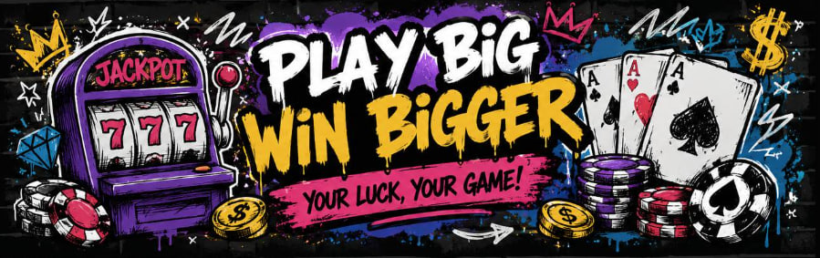

怎么玩
买 777X，烧币射门，中了就拿 BNB。
这个模式只保留最核心的玩法。Flap 负责发射和交易，买卖税进入金库；只有自愿把 777X 打进黑洞的人，才会进入当前 17 分钟点球轮次。
3% 买卖目标税
17 分钟 一轮点球
30% 每轮派奖

规则
Flap 点球模式
简单说
- 先买 777X。 代币在 Flap 发射和交易，这一版不走你以前那套首页买卖曲线。
- 买卖税进金库。 当前目标是买 3%、卖 3%，税进 BNB 金库，作为后续点球奖金来源。
- 前期 dev 分成是临时的。 只有最前面的 77 分钟会切一部分给 dev/API，之后自动停止，后续新增税流都留在奖池里。
- 想参与就主动烧币。 你点一次射门，选中的 777X 就会直接进黑洞，同时记成这一轮的一次点球权重。
- 烧得多更有优势，但不是线性碾压。 权重按平方根算，大额确实更强，但不会变成纯大户稳赢。
- 老玩家会有小幅加成。 这个加成是链上透明规则，不是黑箱画像，也不是链下人工打分。
- 每轮派奖 30%。 17 分钟到了以后，下一次链上触发会请求随机数，然后自动把这一轮奖金打给赢家。